Portal Leave Request
A user-friendly Odoo portal extension that allows employees to submit, track, and manage their leave requests directly from the website portal. This module streamlines the Time Off process by providing a self-service interface for applying for leave, viewing balances, checking approval status, and managing request history without requiring backend access. Fully integrated with Odoo HR, Attendance, and Holidays.
Key Features
Easy Leave Requests
Employees can submit leave requests directly from the portal using a simple, clean, and user-friendly interface.
Track Request Status
Users can view approval status such as Pending, Approved, or Refused without accessing the backend.
View Leave Balance
Employees can instantly check their leave balance for each leave type before submitting a new request.
Integrated with HR
Fully integrates with Odoo HR, Attendance, and Holidays, ensuring smooth HR workflow and accurate leave tracking.
Secure Portal Access
Employees only access their own leave information, ensuring privacy and data security in the portal.
Mobile-Friendly Design
Optimized for mobile and tablet screens so employees can apply for leave anytime, anywhere.
Configuration & Usage
Open Time Off Types
Navigate to:
Time Off → Configuration → Time Off Types
This menu allows the HR Manager to configure all available leave types such as: Sick Leave,Paid Leave,Unpaid Leave,Custom Leave Types
These configured leave types will appear for employees on the portal when they create a leave request.
The screenshot shows the Configuration dropdown where you must click Time Off Types to proceed with setting up the leave options used in the portal form.
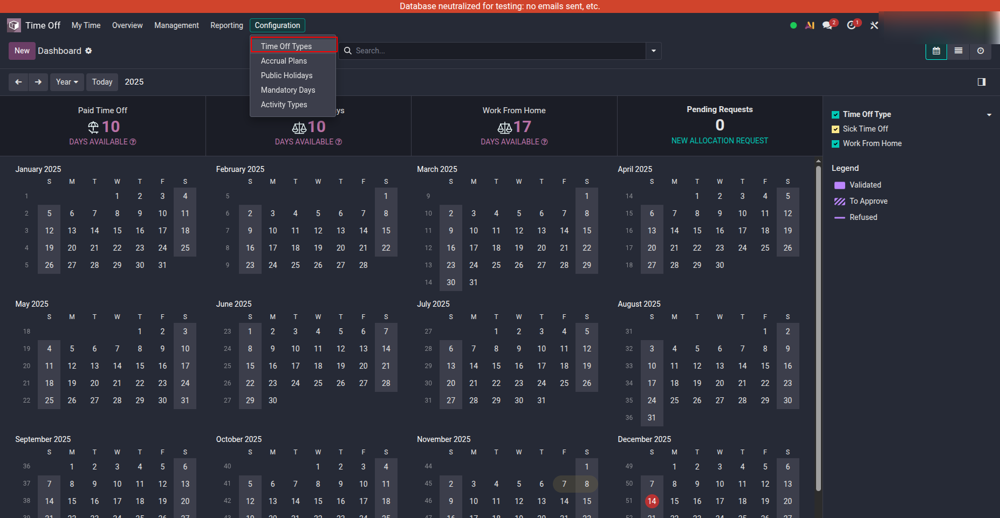
Create a Portal User
Go to Settings → Users and create a new user.
Set the User Type to Portal so the employee can access the leave request page from the portal.
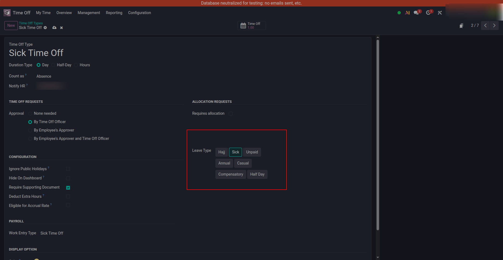
Link Employee with Portal User
Open the employee profile and click on the Settings tab.
Under Related User, select the portal user created earlier.
This links the employee record with the portal account, allowing the user to request leave from the portal.
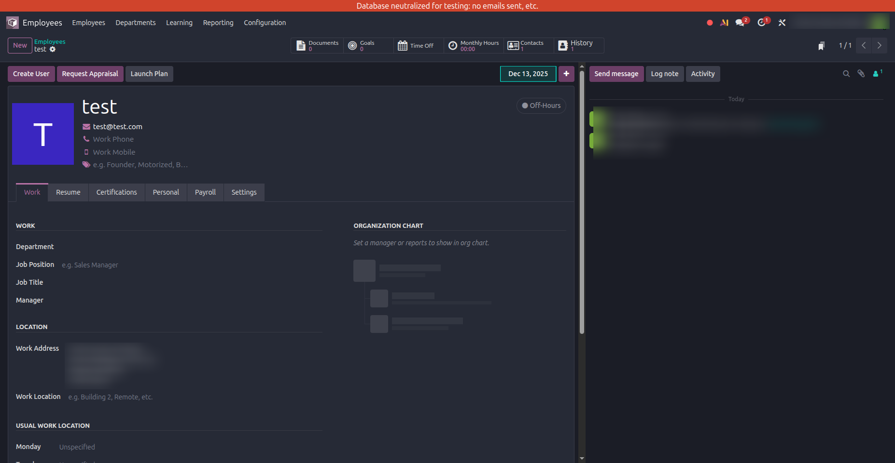
Access the Time Off Summary
After logging into the portal, open your My Account page.
Here you can see your profile details and a Time Off Summary box showing the total number of your leave requests.
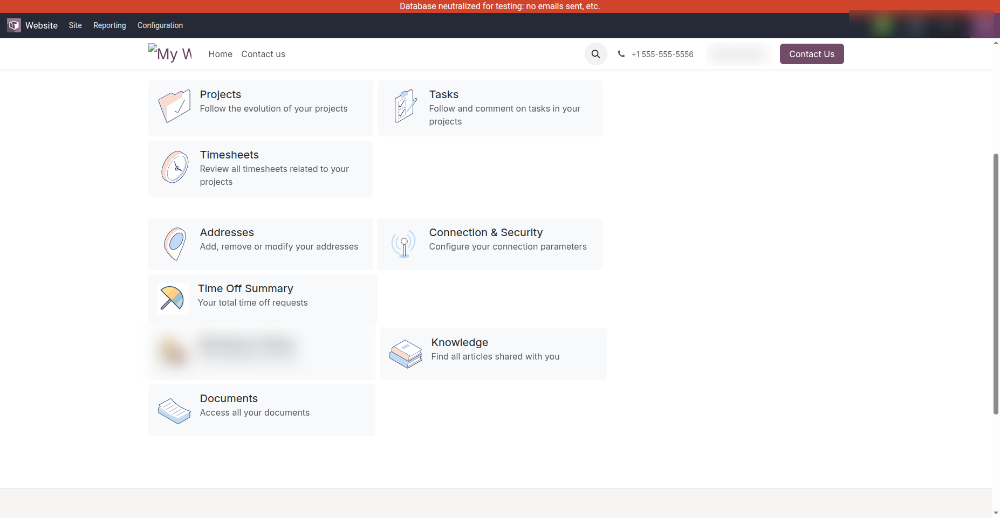
View Leave Requests & Allocated Leaves
On the Employee Time Off page, the portal user can view all recent and previous leave requests along with their current status.
Below this section, the Allocated Leaves table shows each leave type with:
total allocated leaves, leaves already taken, and remaining balance.
This helps employees clearly understand their available leave balance before submitting new requests.
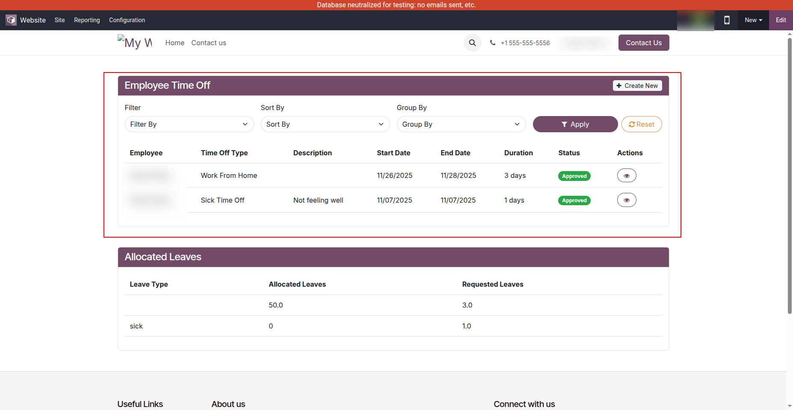
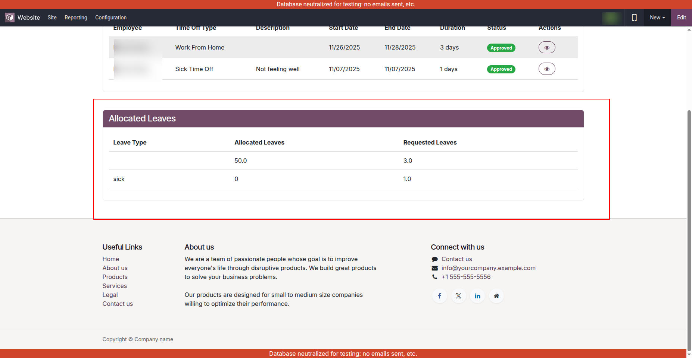
Filter and Sort Leave Requests
Portal users can filter, sort, or group their leave requests by date, status, or leave type using the available Filter, Sort By, and Group By options.
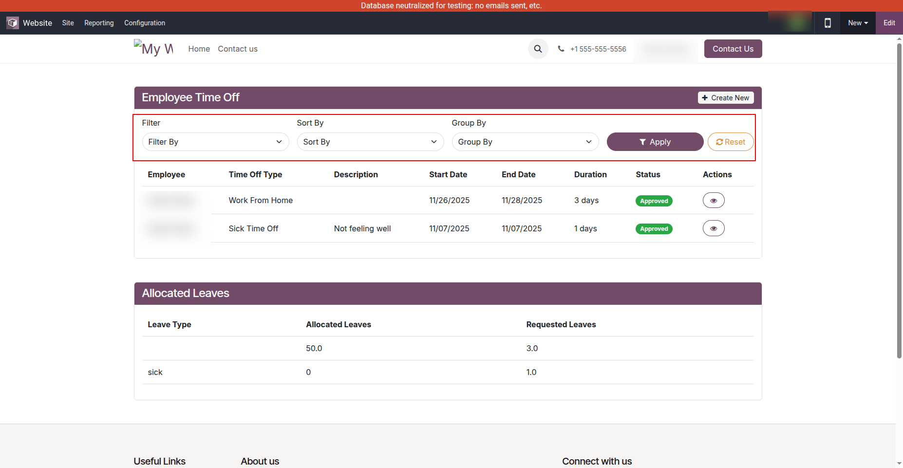
Create a New Leave Request
Click on Create New to open the leave request form.
Select the required Leave Type, add a brief description, and submit the request.
Once submitted, the leave request will be sent for approval and its status will be updated accordingly.
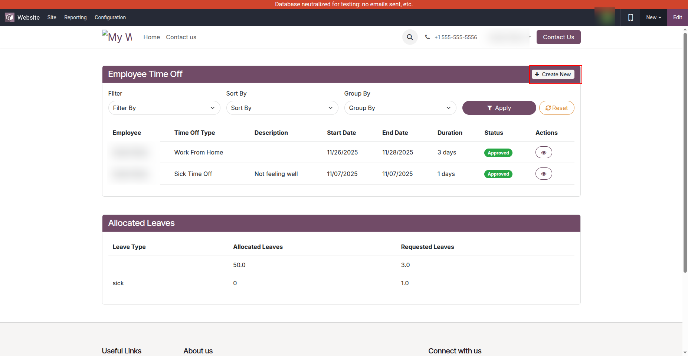
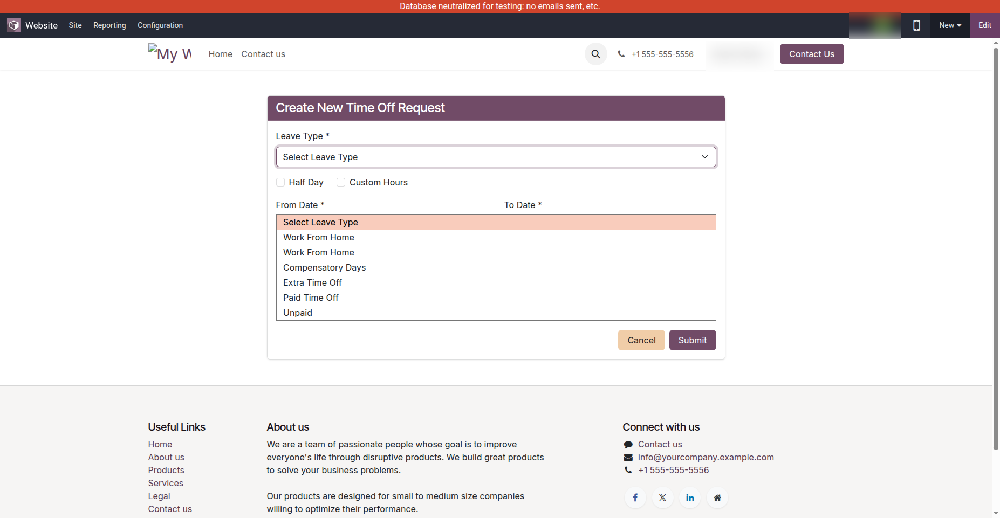
Fill Leave Request Details
Select the required Leave Type and, if needed, upload a supporting document.
Choose the From Date and To Date; the system automatically calculates the duration.
Half Day:
Enable Half Day to request leave for either the Morning or Afternoon.
Custom Hours:
Enable Custom Hours, select the start and end time, and the system will automatically calculate the total hours.
Add a brief Description and click Submit to send the leave request for approval.
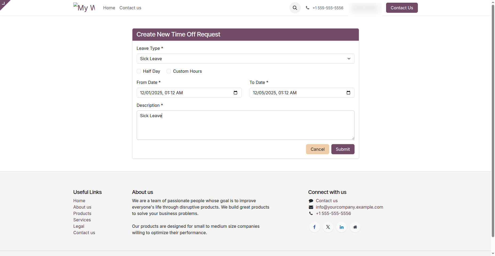
Approve or Refuse Leave
Approvers can review leave requests under Time Off → Management → Time Off and approve or refuse them.
Approved leaves are deducted from allocations and unpaid leaves impact payroll.
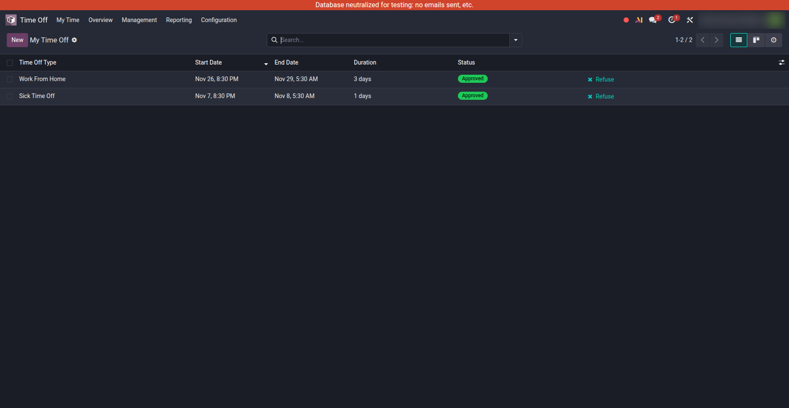
Edit or Cancel Leave
Employees can edit or cancel requests only while the status is To Approve.
Once Approved, the request becomes read-only.
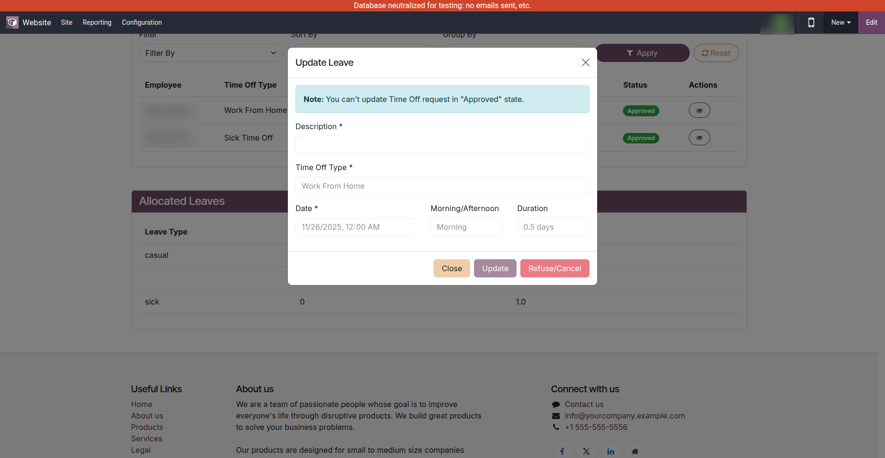
Releases
Version 19.0.1.0 | Released on : 14th December 2025
First release of the Portal Leave Request module, allowing employees to submit, track, and manage leave requests from the portal with approval workflow and allocation tracking.